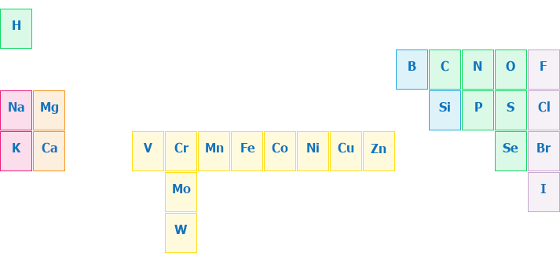

Biogenní prvky
bio-
-géne

(přibližný procentuální obsah v lidském těle)
Makrobiogenní prvky
- uhlík 50 %
- kyslík 20 %
- vodík 10 %
- dusík 8,5 %
- vápník 4 %
- fosfor 2,5 %
Oligobiogenní prvky – mikrobiogenní prvky
- draslík 1 %
- síra 0,834%
- sodík 0,4 %
- chlor 0,4 %
- hořčík 0,1 %
Stopové prvky
- železo 0,001 %
- mangan >0,001 %
- jod 0,00005 %
- chrom
- kobalt
- měď
- molybden
- selen
- zinek
- křemík
- fluor
- vanad
- bor
- brom
- nikl
- wolfram
wikipedia.org
wiley-vch.de